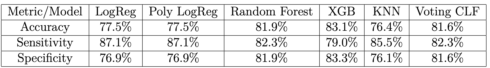
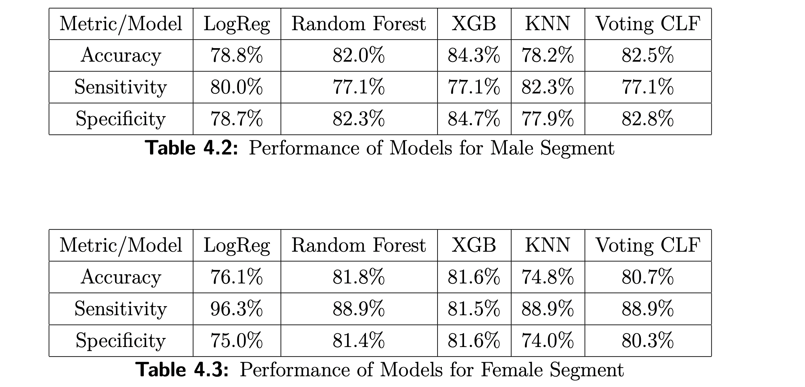

RESULTS
The performance of the tuned models on the entire test set in the below table will be used select the best model for which further bias analysis is performed. As mentioned before the aim is to maximize sensitivity but not at the cost of decreasing accuracy too much. Logistic Regression and Polynomial Logistic Regression present the same results and can be discussed together, since during the GridSearch optimization of hyperparameters the polynomial degree was set to 1. This makes them equivalent. Moreover, they are the ones with the highest sensitivity, followed closely by the K Nearest Neighbors classifier. All of the models based on tree methods including Random Forest and Gradient Boosting perform significantly worse. The ensemble method does not manage to improve the performance above the one of the single models. Therefore, this paper focuses primarily on Logistic Regression and K Nearest Neighbors to further optimize performance, and evaluate and reduce potential representation

After the models are trained the test set is separated into a female and a male subset to observe the performance of the models for the two groups separately. The following scores are obtained:

The empirical study of acute liver failure prediction demonstrates clear and significantly large gender bias in favor of the female subset. For Logistic Regression, the disparity amounts to approximately 16.3% difference in sensitivity. In K Nearest Neighbors the model results in a 6% higher sensitivity score for women than for men. The same ratio is 11% higher for women using the Random Forest classifier and the Voting classifier, and 4% higher for the same social group according to Gradient Boosting.
The direction of the bias is unexpected because theory suggests that the underrepresented segment is most commonly the one that is harmed by a disparity. Instead, in this study women represent less than half of the dataset. Moreover, men can be seen as a risk group for two reasons. Firstly, the training set shows a higher density of “sick” male patients than female ones. As a result, during the oversampling of ALF more male data points are generated, and the difference in the percentage of ALF positiveness of the two genders becomes even larger than before. Secondly, the odds ratio, which represents the probability of men suffering from an acute liver failure over the probability of the same event for women, is greater than one, confirming the predisposition of men to the disease. Logically, this should increase the number of true positives of the male segment, and, since true positives are part of the nominator of sensitivity, it should be
higher as well. The non-obviousness of the source of the bias is not surprising, because,
as mentioned previously, such social inequalities are often subtle.
Nonetheless,the feature importance analysis performed in the study shows that age is
the most significant positively correlated with ALF variable. Moreover, the average age of women in the dataset is 1.6 years
higher compared to men. The skewness of the distribution of age by gender in the
dataset could be the reason why women become more likely to get acute liver failure, which results in the significant gender bias in favor of the female subset.
Hence, the first bias reduction technique is the one of age standardization performed by gender.
Nonetheless, the results show
the transformation of age reduces the overall sensitivity of Logistic Regression by 0.5%
and increases the bias of the same model by 2%. The same tendency is observed with
K Nearest Neighbors - the sensitivity drops by 0.5%, while the bias rises by 5%. Hence,
the first approach proved to have exactly the opposite of the desired effect and will not
be applied.
The second approach, based on the adjustment of sample weights, is performed
on the Logistic Regression model only, as the K Nearest Neighbors classifier does not
support it.
Four different sets of weights are explored. All of them put the highest importance on the sick males as a technique to
optimize true positive classifications, which is a common tool to minimize false negative
misclassifications(known to cause the difference of sensitivities across the genders).
With the first set of weights, an increase of 11% in overall sensitivity is accompanied
by a reduction of the bias by more than 13%. However, their implementation leads
also to a decrease of around 23% in accuracy. The negative effect of this method on
accuracy is worrisome because its values become very close to the ones of the random
classifier(40-50%). This suggests that another solution to the bias mitigation should be
found.
The second set of weights completely eliminates the bias in sensitivity, which increases
to 100%, and has accuracy slightly higher than the one achieved by the application of
the first set of weights. However, this accuracy is still very low and comparable with
the one of the random classifier. It becomes clear that one might be willing to allow a
certain percentage of bias to improve the overall accuracy.
The third set of weights achieves this goal. The bias is reduced from 16.3% to
approximately 3.2% in favor of women. The increase in sensitivity from the initial
models is 11%, while the decrease in accuracy is 15%, which is 8% less than with the
other sets of weights. The accuracy is now higher than the one achieved by a random
classifier. Nonetheless, the drop in accuracy is still quite big and suggests that there is
place for improvement of the solution.
The last set of weights has a different effect on the performance of the model. It
causes the smallest decrease in accuracy(5.3%) and still manage to reduce the bias
(from 16.3% to 1.7%). To achieve this it increases the overall sensitivity by 4% but it
also decrease the sensitivity for the female segment by 4%. Nonetheless, it proves to
have the best trade off between mitigating the bias, maximizing sensitivity and not
decreasing accuracy too much; thus, it is the one that this paper suggests as a final
solution.
The final results are presented in the below table: